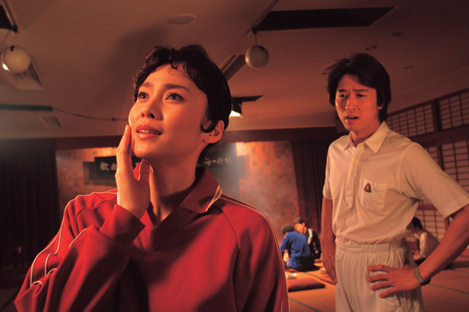

POSTS
[방구석 영화제]혐오스런 마츠코의 일생 : 마츠코는... 나의 하나님이었어요
일본영화는 잘 보지 않습니다.
게다가 뮤지컬영화는 선호하지 않습니다
그런데 우연히 걸작을 발견했네요.
전혀 혐오스럽지 않습니다. ‘답답하지만 사랑스런’ 마츠코의 일생입니다.

OST 중에서 “Happy Wednesday”
生きるって 素晴らしい
Oh, my life is so beautiful.
산다는건 멋져
今日は 待ちに待った
Happy Wednesday
오늘을 기다리고 기다렸어
愛する喜び
I wait for you everyday
사랑하는 기쁨
あなたが やって来る
Happy Wednesday
당신이 찾아왔어
Sugar,Pepper.Salt and all my love
Happy Wednesday
Please eat soup! and please eat me!
Happy Wednesday
あなたがいなけりゃ 生きていけない
週に 一度だけの
Happy Wednesday
당신이 없으면 살아갈 수 없어
일주일에 단 한번의
행복한 수요일
[출처] http://blog.naver.com/myhyunjoong?Redirect=Log&logNo=90017494712
[홍보영상]